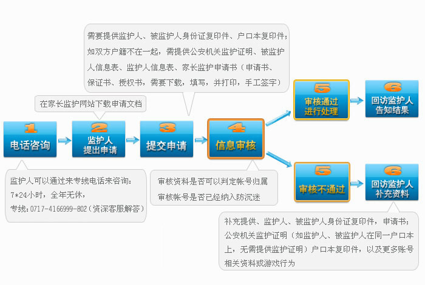

- 系统介绍
- 申请引导
- 申请流程
- 申请条件：
- 1、 申请人需为被监护未成年人的法定监护人；
- 2、 申请人的被监护人年龄小于18周岁
- 3、 申请人需为大陆公民，不含港、澳、台人士。
- 申请需提交材料：
- 1、监护人信息表（包含监护人的身份证明复印件）；
- 2、被监护人信息表（包含被监护人所玩游戏相关信息及身份证明复印件）；
- 3、填写网络游戏未成年人家长监护申请书、保证书、授权书并手工签字（需下载，填写并打印，签字）；
- 4、申请人与被监护人的监护关系证明文件（户口簿或有关机关出具的证明文件）。
- 申请方式：
- 1.电话服务
- 监护人可以通过来专线电话来咨询，7*24小时，全年无休，专线：0717-4166999802 （资深客服解答）。
- 2.接待服务
- 监护人可以直接上门进行申请，接待服务受理时间7*8小时（9:30—17:15），全年无休，接待地址：深圳市宝安区银田路4号宝安智谷创新产业园D栋6楼。
- 3.传真服务
- 监护人可以通过传真发送相关信息，进行申请，传真24小时受理，传真号码：0717-4220055。
- 其他要求：
- 1.申请人应提交较完备的申请材料，对未提供的信息要及时补充；可请熟知电脑、互联网、游戏的人员进行协助，以便提供详实资料；
- 2.申请人应保证提交的信息真实有效；对于提供虚假信息或伪造证件，我司将保留进一步追究法律责任的权利。


“网络游戏未成年人家长监护工程”是一项由完美时空、盛大、腾讯、网易、搜狐畅游、巨人六家网络游戏企业共同发起并参与实施，由中华人民共和国文化部指导，旨在加强家长对未成年人参与网络游戏的监护，引导未成年人健康、绿色参与网络游戏，和谐家庭关系的社会性公益行动。
“家长监护机”制针对目前未成年人缺乏自控及自律能力，容易陷入沉迷；少数监护人缺少时间照顾孩子，不能及时监督孩子游戏时间的现状，而推出的一种可由家长实施监控，纠正部分未成年子女沉迷游戏的保护机制。
- 供申请监督方式：
- A. 屏蔽账号：根据监护人意愿屏蔽相关游戏应用登陆。
-
B. 账号动态监控：登陆、修改密码等操作将发短信至监护人手机。
1）账号已经有认证手机的，将监护人手机替换为认证手机；
2）账号未认证手机，将监护人手机绑定成认证手机；
- 其他要求：
- 1.申请人应提交较完备的申请材料，对未提供的信息要及时补充；可请熟知电脑、互联网、游戏的人员进行协助，以便提供详实资料；
- 2.申请人应保证提交的信息真实有效；对于提供虚假信息或伪造证件，我司将保留进一步追究法律责任的权利。

游戏版权所有 Copyright (c) 2017 All Rights Reserved
服务方式
-
 服务专线：
服务专线：
- 0717-4166999802
- (资深客服解答)
- 服务邮箱：
- yaojiajun@zaanf.com
- (直通邮件接收)
- 服务传真：
- 0717-4220055
家长监护服务FAQ
Q:
可以通过什么渠道申请家长监督未成年人账号？
A:
目前您可以通过专线电话、网络接待方式来咨询，然后采取传真和上门的方式进行申请。
Q:
申请监督的账号有什么要求？
A:
账号所属人必须未满18周岁。
Q:
申请监督未成年人账号需要提供什么?
A:
您需要提供监护人身份证复印件、账号所属人身份证复印件以及户口本复印件、公安机关监护证明。